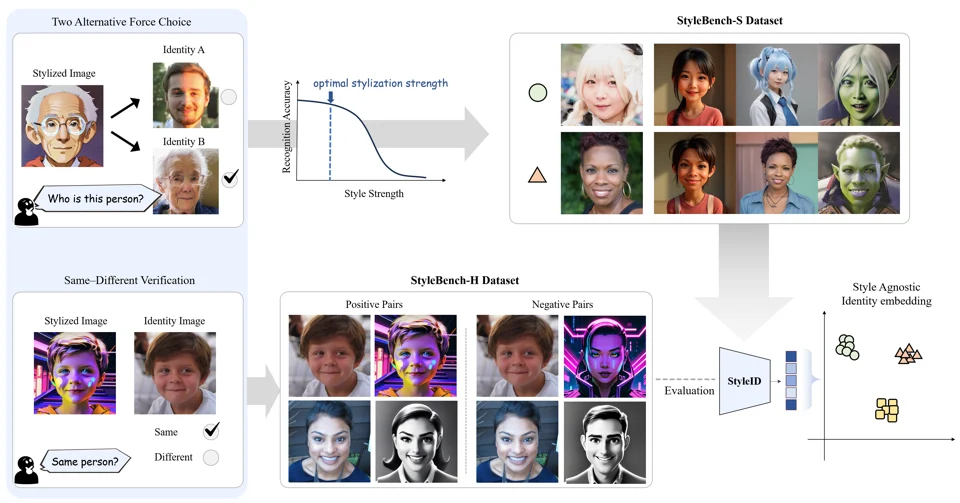

2026
StyleID: A Perception-Aware Dataset and Metric for Stylization-Agnostic Facial Identity Recognition
SIGGRAPH 2026 · ACM Transactions on Graphics
A perception-aware dataset and identity metric for recognizing the same face across visual styles.